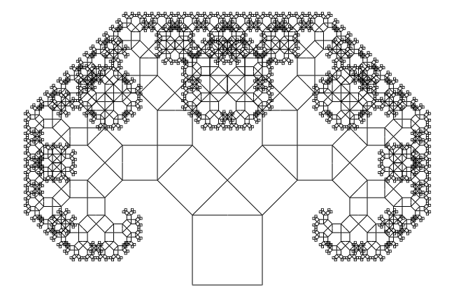
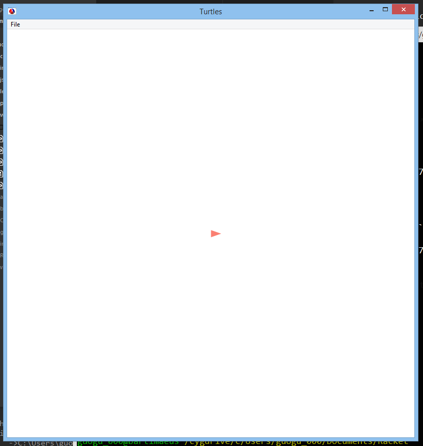
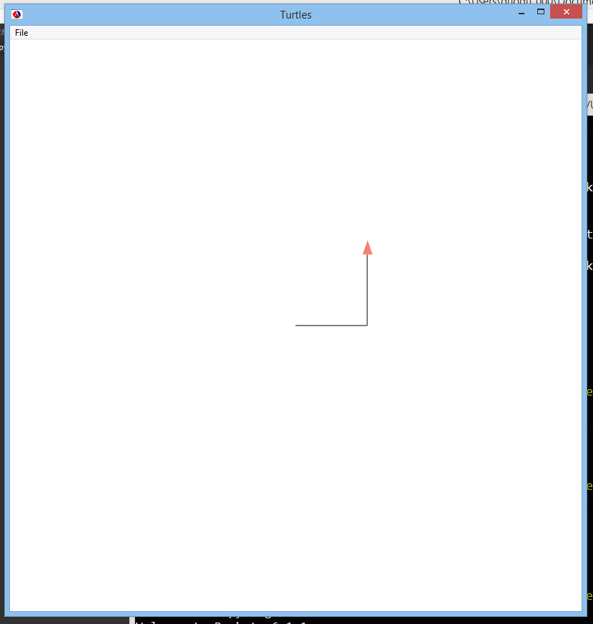
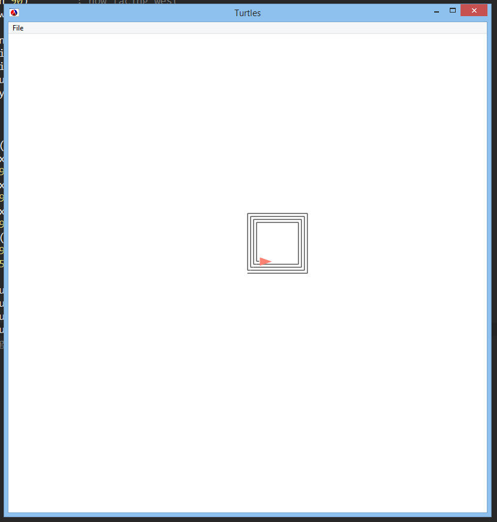
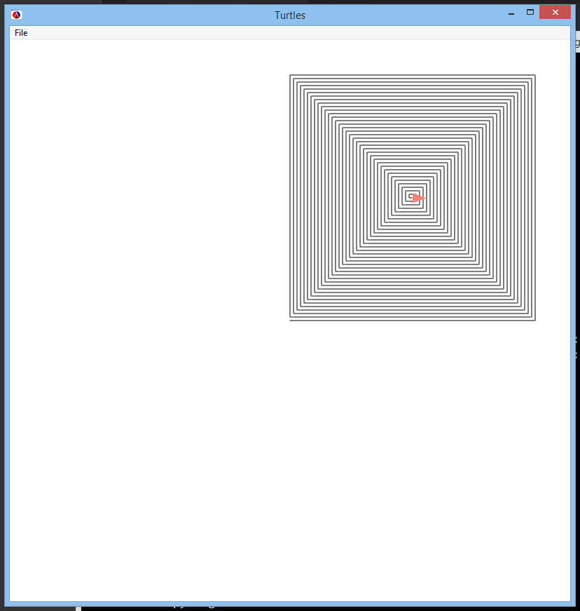
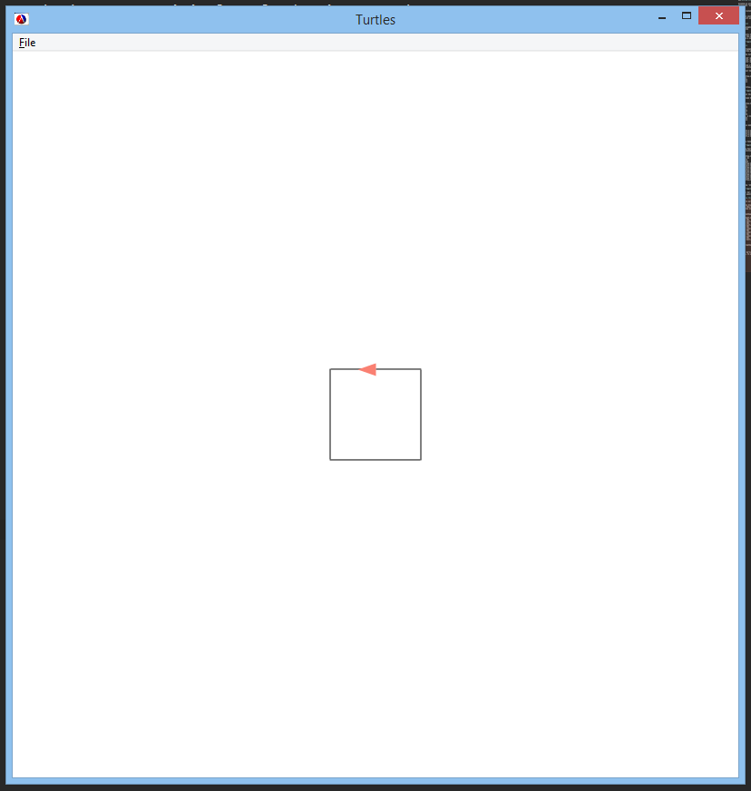
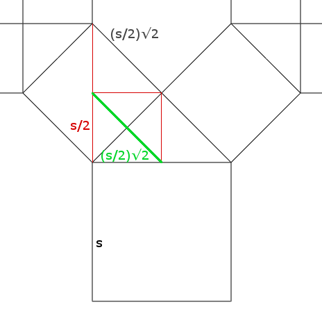
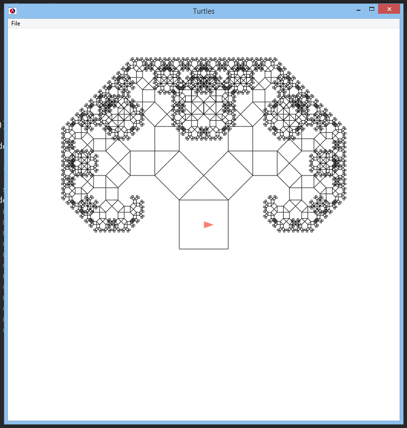

In this post, inspired by this week's Daily JavaScript challenge, I'll walk through how to use Racket's turtle graphics library to draw a Pythagoras tree. I'll assume basic familiarity with Racket, but not with turtle graphics.
Our final result will look like this:

Getting started
Assuming we already have Racket, we'll need to install the htdp-lib package by typing the following into our terminal:
raco pkg install htdp-lib
Now we can start. Let's create a new file called pythagoras-tree.rkt. It should start with
#lang racket
(require graphics/turtles)
(turtles #t)
which imports the turtle graphics library and initializes the drawing window. If we run the program (racket pythagoras-tree.rkt), we see an empty window containing a small red triangle:

Turtles
The red triangle in the center is a turtle. It is capable of moving in a straight line and turning in place. It can also draw while moving.
We give the turtle instructions by using commands like the following:
(move 10)means move 10 pixels forward without drawing.(draw 10)means move 10 pixels forward while drawing.(turn 45)means turn 45 degrees counter-clockwise.
You can find a full list of turtle commands here.
Now consider the following procedure:
(define (draw-stuff x) ; starting position: facing east
(draw x) ; draw east x pixels
(turn 90) ; turn north
(draw x)) ; draw north x pixels
Calling (draw-stuff 100) would produce the following drawing:

Notice that the turtle is now pointing north.
We can extend this. Let's define draw-stuff-2:
(define (draw-stuff-2 x) ; starting position: facing east
(draw x) ; draw east x pixels
(turn 90) ; turn north
(draw x) ; draw north x pixels
(turn 90) ; turn west
(draw x) ; draw west x pixels
(turn 90) ; turn south
(draw (- x 5)) ; draw south x-5 pixels
(turn 90) ; turn east
(draw 5)) ; draw east 5 pixels
Now when we make the calls
(draw-stuff-2 100)
(draw-stuff-2 90)
(draw-stuff-2 80)
(draw-stuff-2 70)
we get the following:

But making four separate calls to draw-stuff-2 is annoying! Let's make our drawing function recursive:
(define (draw-stuff-3 x) ; starting position: facing east
(if (= x 0) ; base case: we can't draw a spiral with 0 width!
'done
(begin
(draw x) ; same as in draw-stuff-2
(turn 90)
(draw x)
(turn 90)
(draw x)
(turn 90)
(draw (- x 5))
(turn 90)
(draw 5)
(draw-stuff-3 (- x 10))))) ; recurse!
Now calling (draw-stuff-3 350) gives us a neat spiral:

(Mental exercise: Our spiral is off-center. Assuming our drawing window is 800 pixels wide, how would we make it centered in the drawing window?)
Drawing the Pythagoras tree
Now back to our original goal: drawing a Pythagoras tree.
We start by drawing a square that is side pixels wide and side pixels high. We can do this by first moving to the center of the northern edge of the square, then drawing along the perimeter counter-clockwise until we're done:
(define (pythagoras-tree side) ; starting position: center of square, facing east
(let ((half-side (/ side 2)))
(turn 90) ; now facing north
(move half-side) ; move north
(turn 90) ; now facing west
(draw half-side) ; draw west
(turn 90) ; now facing south
(draw side) ; draw south
(turn 90) ; now facing east
(draw side) ; draw east
(turn 90) ; now facing north
(draw side) ; draw north
(turn 90) ; now facing west
(draw half-side))) ; draw west
Calling (pythagoras-tree 100) produces the following:

Now what? We're going to recurse, but we'll be drawing two squares in the next step. In fact, with every step we'll double the number of squares to draw!
To proceed, we'll use the split procedure, which creates a new turtle where our current turtle is located. Any command we issue will then be executed by both turtles. Check out the documentation for the split procedure here.
Currently, at the end of our pythagoras-tree procedure, we're at the top of the current square (which we've just drawn) and we're facing west. We should now turn to face northwest, then split off another turtle facing northeast:
(turn -45) ; turn turtle 1 (current turtle) to face northwest
(split (turn -90)) ; create and turn turtle 2 to face northeast
Great! Now we have two turtles: The one facing northwest will draw the smaller square in the northwest corner. The one facing northeast will draw the smaller square in the northeast corner. Each will then split again, so that there are four turtles in total (and then eight, and then 16, and so on).
Before we can recursively call pythagoras-tree, we must move our turtles to the appropriate starting positions. Each turtle should be at the center of its new square, facing east relative to the square.
(move (* half-side (sqrt 2))) ; move both turtles to the centers of the new squares
(turn -90) ; adjust them to face east
(pythagoras-tree (* (/ (sqrt 2) 2) side)) ; recurse!
The mathematical calculations involved are captured in this crude diagram:

Our final code
Now we simply add a base case, and we're done! Here's our completed pythagoras-tree procedure:
(define (pythagoras-tree side) ; starting position: center of square, facing east
(if (< side 3) ; this seems like a good stopping point...
(home) ; clear all turtles except the original
(let ((half-side (/ side 2)))
(turn 90) ; now facing north
(move half-side) ; move north
(turn 90) ; now facing west
(draw half-side) ; draw west
(turn 90) ; now facing south
(draw side) ; draw south
(turn 90) ; now facing east
(draw side) ; draw east
(turn 90) ; now facing north
(draw side) ; draw north
(turn 90) ; now facing west
(draw half-side) ; draw west
(turn -45) ; turn turtle 1 (current turtle) to face northwest
(split (turn -90)) ; create and turn turtle 2 to face northeast
(move (* half-side (sqrt 2))) ; move both turtles to the centers of the new squares
(turn -90) ; and adjust them to face east
(pythagoras-tree (* (/ (sqrt 2) 2) side))))) ; recurse!
And now we call (pythagoras-tree 100) and we get:

The complete version of the code can be found on GitHub Gist.